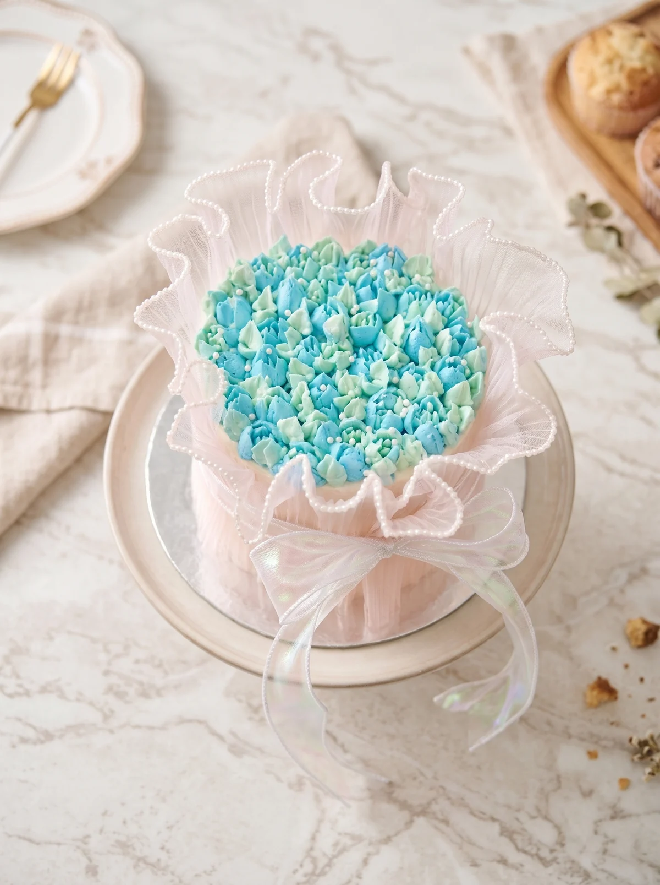
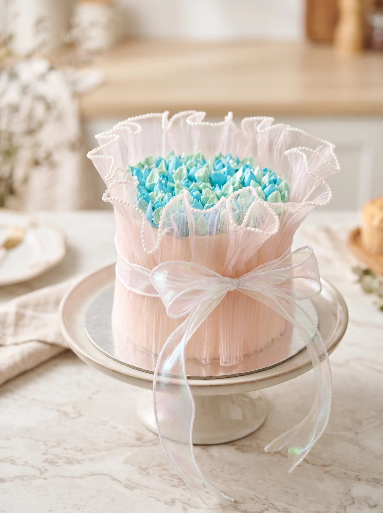
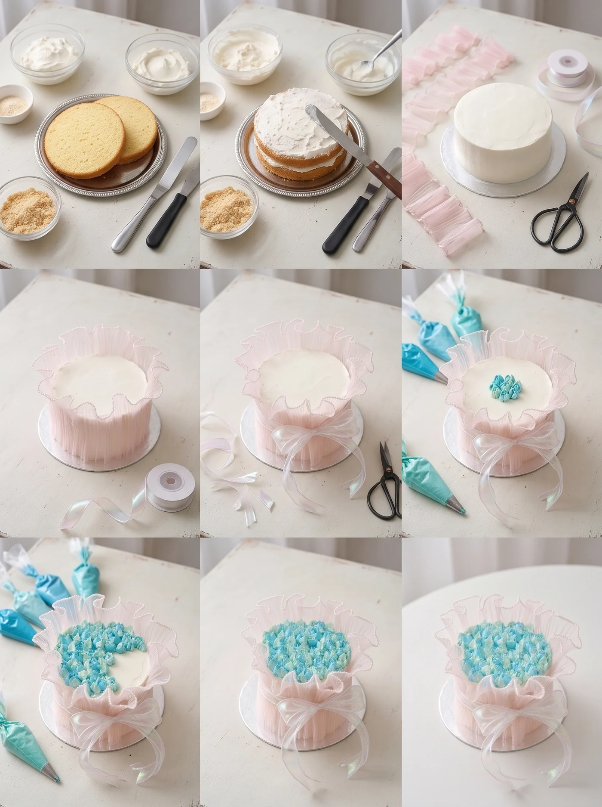

Floral Bouquet Cakes in Cebu
Hand-piped buttercream flowers, wrapped and finished for a gift you can slice.


Looking for a floral cake in Cebu? Our Bouquet Cake is a flower cake finished with hand-piped buttercream rosettes, sage leaves, pink pleats along the collar, pearls at the edge, and a bow at the waist. It reads as a bouquet you can slice, softer and lower than our Signature Marble.
Price
Price on request
Bouquet cakes are not on the published launch list. Tell us the date and the table, and we confirm the price when we reply. A 50% deposit confirms the order once that price is agreed. There is no set peso amount on this page.
Gifts and anniversaries
Choose it when someone would rather receive flowers than a tall birthday tier. It travels well as a gift across metro Cebu when you give us the recipient’s address and a mobile number for the person opening the door.
Size and table
Tell us the table size or guest count if you know them. “Bouquet” describes the finish; we confirm scale in our reply so the cake matches the setting rather than overwhelming a small table.
Palette
Our studio cakes use blush, sage, ivory, and dusty blue piped by hand. Send reference photos if you want a specific palette — we will say whether buttercream can match it on your date.
Ordering and delivery
Message us at least three days before the date. Delivery covers Cebu City, Mandaue, and Lapu-Lapu; pickup in Cebu City is arranged after confirmation. Payment method is confirmed when we reply.
How to start
Select Bouquet Cake on the order form or WhatsApp us with the date and any line you want on top.
Carrying and storage
Keep the cake upright, out of sun, and cool until it is opened. If delivery lands hours before dinner, refrigerate when you can — especially in Cebu afternoons. The heat note in our journal is written for exactly that gap.
When to choose marble instead
Pick Signature Marble when children expect a name on a tall tier and candles. Pick bouquet when the moment is softer: thank-yous, anniversaries, and gifts that should look like flowers on arrival.
A line among the flowers
There is room for a short inscription if you want one. Send the spelling exactly, including a name. A long paragraph will not sit cleanly on a floral top; we will say so in the reply and keep the piping clear. Home dinners, hotel handovers, and office desks in Cebu City, Mandaue, and Lapu-Lapu are the usual drops. If the bouquet is a surprise, name who should receive the delivery window. Bouquet cakes as a gift walks through that handover.
Bouquet Cake questions
What does a Bouquet Cake look like?
It is a cake covered in hand-piped buttercream rosettes and sage leaves, with a pleated wrapper, pearls and a bow. The flowers are buttercream and the cake is sliced to serve.
How much does a Bouquet Cake cost in Cebu?
The price is on request because the scale and finish vary. Tell us your date and guest count; we confirm the exact quote before a 50% deposit.
How many people does a Bouquet Cake serve?
“Bouquet” describes the floral finish rather than a fixed size. Share the guest count or table size and we will confirm a suitable scale.
How far ahead should I order?
Order at least three days before your date. Ask earlier for weekends, holidays and detailed piping.
Where do you deliver Bouquet Cakes?
Delivery is available in Cebu City, Mandaue and Lapu-Lapu. Pickup in Cebu City is by arrangement after confirmation.
